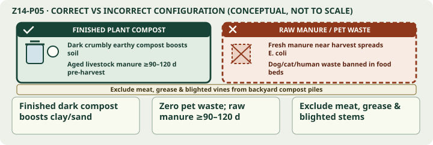

Z14-P05 · Food production and preservation · New manuscript
Build fertile soil with finished compost while avoiding raw manure hazards
Improve soil structure and water retention safely without introducing E. coli or Salmonella pathogens onto edible produce.
When it applies · Soil preparation, composting, and fertilizing backyard food gardens.
Equipment · Finished dark earthy compost, clean shovel, and food-safety harvest calendar.

Actions
- Incorporate thoroughly decomposed, finished plant-based compost into topsoil to boost water retention in sandy soil and drainage in heavy Minnesota clay.[P02]
- NEVER apply fresh or raw animal manure directly to beds growing edible vegetables near harvest—and NEVER compost dog, cat, or human feces for food gardens (parasite and pathogen hazards); if aged livestock manure is used, follow strict USDA/Extension waiting intervals (at least 90–120 days before harvest depending on soil contact).[P02, P16]
- Keep garden compost piles balanced (carbon browns + nitrogen greens + moisture + aeration) and exclude meat, dairy, greasy scraps, and diseased plant stems that attract rodents and carry over blights.[P02, U13]
Failure recognition · Spreading fresh uncomposted chicken or cow manure around lettuce and radish rows two weeks before harvesting salad greens.[P02, P16]
Verify · Confirm compost is dark, crumbly, and odor-free, pet waste is excluded, and raw manure never contacts near-harvest produce.[P02, P16]
Stop or change course · Suspected sewage runoff, pet-waste contamination, or fresh manure splash onto leafy greens prohibits eating those crops raw.[P02, P16]
Evidence and editorial notes
- P02 · University of Minnesota Extension · Planting the Vegetable Garden (current web edition)
- Section: Soil Preparation, Testing, Compost, and Safe Fertility · Conditions: Residential garden beds and small-acreage food plots
Support: Test garden soil through an accredited lab (e.g., UMN Soil Testing Lab) before heavy amending to determine pH, nutrients, and urban lead risk; incorporate finished compost and avoid applying raw animal manure immediately before harvesting edible crops.
Limitations: Urban soils near older painted buildings or roads may contain legacy lead requiring raised beds and clean soil barriers. · Conflicting evidence: None; links soil fertility to food-safety contamination prevention.
Editorial note: Separates safe composted soil building from pathogen/heavy-metal hazards. · Specialist reviewer: Soil science and Extension horticulture
Primary source · checked 2026-11-24 - P16 · USDA / FDA / CDC · Four Steps to Food Safety (current web edition)
- Section: Clean, Separate, Cook, Chill > Produce Washing and Cross-Contamination · Conditions: Garden-to-kitchen harvesting, food prep, and preservation workspaces
Support: Wash hands 20 seconds with soap and safe water, scrub firm produce under running safe water before peeling/cutting, keep raw animal foods strictly separate from ready-to-eat produce, and sanitize prep surfaces and utensils between tasks.
Limitations: Washing produce with soap, detergent, or bleach is unsafe and not recommended. · Conflicting evidence: None; extends F01–F03 into garden harvest and home preservation.
Editorial note: Anchors kitchen sanitation and cross-contamination barriers in Z14. · Specialist reviewer: Food safety and public health
Primary source · checked 2026-11-24 - U13 · CDC · How to Make Water Safe in an Emergency (2024-09-19)
- Section: Sanitation, Hand Hygiene, and Emergency Waste Containment · Conditions: Household water-service or sewer interruption
Support: Maintain separate handwashing stations using safe water and soap (or alcohol hand rub when hands are not visibly soiled), line emergency bucket toilets with heavy bags and tight lids when sewer service is unusable, and never mix bleach with ammonia or acids.
Limitations: Improvised sanitation is a temporary containment bridge until municipal sewer or licensed sanitation resumes; follow local health department disposal orders. · Conflicting evidence: None; prevents fecal-oral outbreaks and toxic chloramine gas mixing.
Editorial note: Core household sanitation and chemical-mixing boundary in Z13. · Specialist reviewer: Environmental health and sanitation specialist
Primary source · checked 2026-11-24
Source lineage · UMN Extension Gardening and USDA Food Safety; new manuscript · Classification · New manuscript.